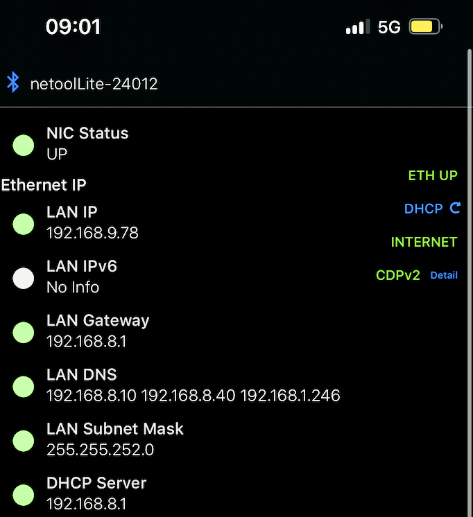
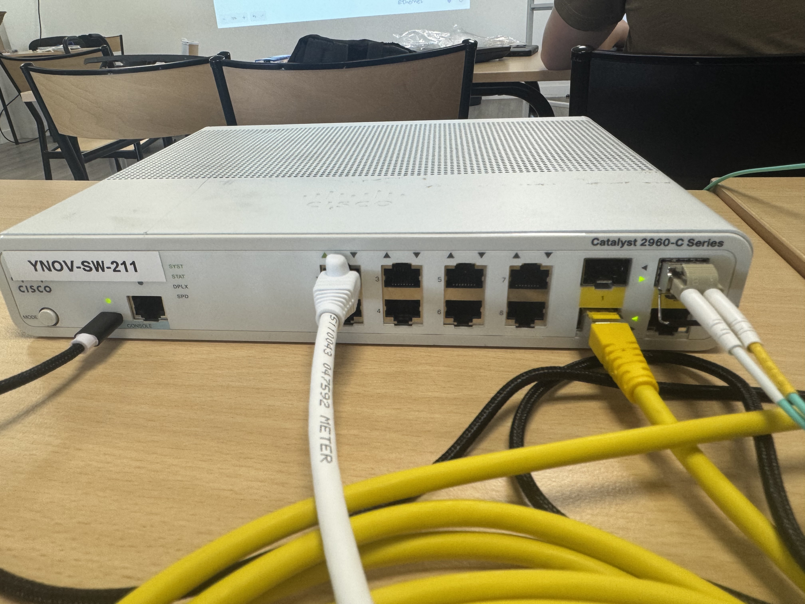
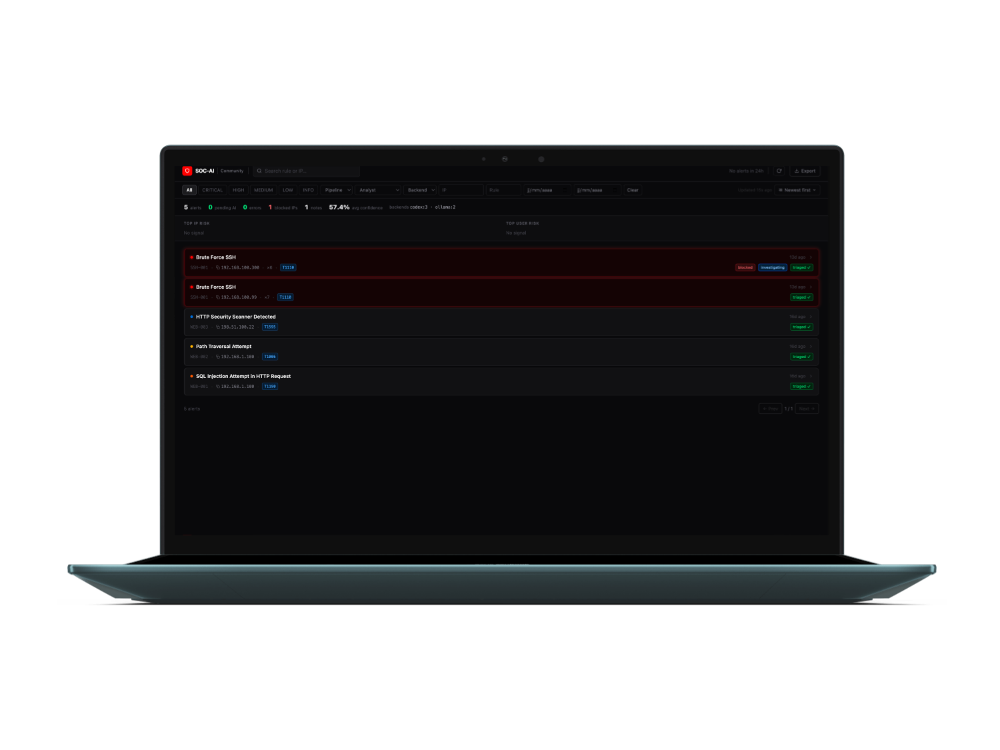
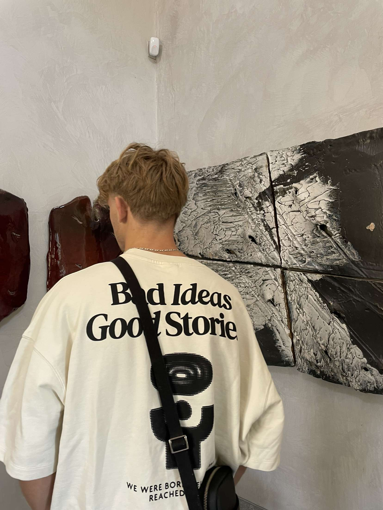

network lab
Cisco topology and configuration practice
Addressing plans, routers, switches and connectivity tests documented as a repeatable lab instead of a one-off screenshot.
Portfolio 2026
B3 computer science student focused on infrastructure and cybersecurity. I keep this portfolio close to the work itself: configs, write-ups, field notes, screenshots and the small decisions that make a system understandable.
Selected traces
network lab
Addressing plans, routers, switches and connectivity tests documented as a repeatable lab instead of a one-off screenshot.
security operations
A practical monitoring concept around event triage, detection logic and incident response automation ideas.
ctf notebook
Problem-solving notes written to preserve the exploit path, the failed assumptions and the final reasoning.



Working style
Start with the boring facts: topology, versions, permissions, logs, expected behavior.
Keep the proof reproducible: command, payload, capture, screenshot or config excerpt.
Write the fix like a handoff: what changed, why it changed and how to test it again.

I am a third-year computer science student at Sophia Ynov Campus, with a base in systems and network administration: Linux, Cisco labs, addressing, cabling, services and troubleshooting.
I am now pushing that base toward cybersecurity. This portfolio is my technical logbook: project notes, CTF reasoning, stage documentation and the decisions behind the final result.